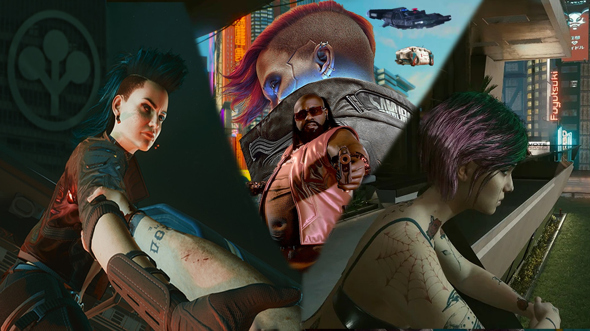

Most of the work in my creative porfolio entails videos and 3D modelling. I've been using Adobe Premiere Pro for over three years now and I still thoroughly enjoy utilizing the various tools to make my ideas become a reality. I've gotten a few months of exposure to Autodesk Maya's tools and how its used. However, I've been gravitating more to Blender and I've been loving my time with the program.
